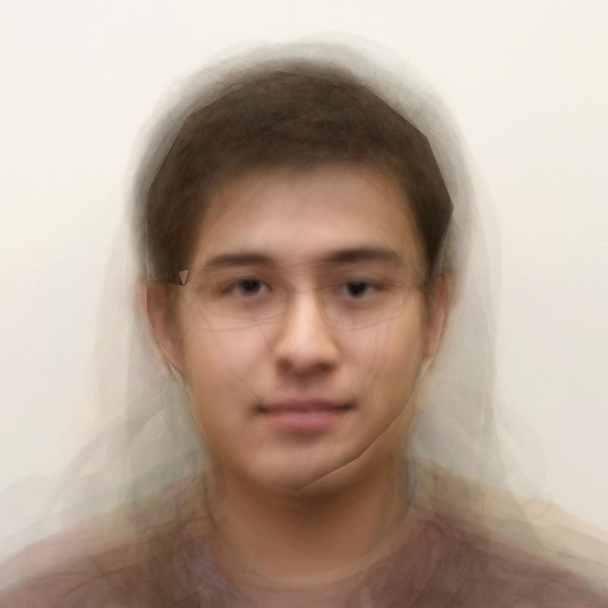

Programming Project #4
- Siddhartha gupta
Image Morphing
My face morphing to another student's face.
First, the correspondence points are obtained for each image in a text file, and the images are resized. A delaunay triangulation is made out of the average points previously obtained, using the matlab command 'delaunay' which avoids skinny triangles. The two faces are then warped (using affine transformation) into an intermediate face depending on warp_frac and dissolve_frac which are both functions of time. The triangles are then filled with the weighted avg of the two faces.
The average face of the class:
This is simply done by finding the average shape using all the text files with the annotations, and then morphing each picture into the average shape and averaging all colors together.

Me to average face and back:
Bells & Whistles:
I changed the annotation script around a bit (used less than 43 reference points, and resized the images manually) to obtain the following results.
A dog changing to a monkey and back:
Batman to Bruce Wayne, didn't turn out so well though:
{kind=link}